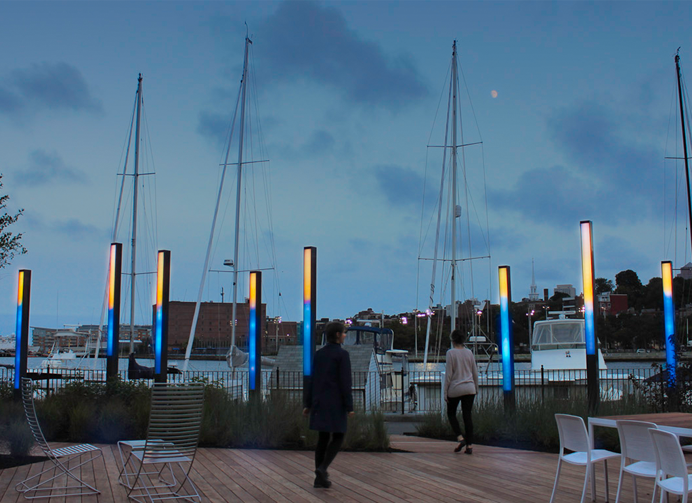

Sosolimited
Tidal Light
Tidal Light translates tide data into a public light sculpture on Boston Harbor. Data is updated in real time from the National Oceanic and Atmospheric Administration. The movement and color of the lights are driven by the tide height and wave conditions for Buoy Station 44013, located 16 miles east of Boston in Massachusetts Bay.
The lighting simulates a scene of water and sky, showing the current tide level with the height of the horizon and wave conditions through the movement of the water.